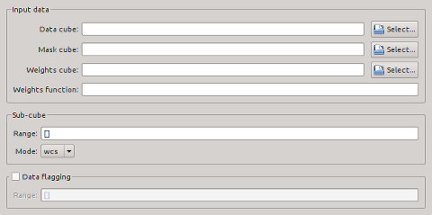

Here, the input data files and settings can be specified.
| Module / Parameter | Type | Values | Description |
|---|---|---|---|
| import.inFile | string | file name | Name of input data file. This option is mandatory, and there is no default. Note that only FITS files are currently supported. |
| import.maskFile | string | file name | Name of optional file containing a mask of pixels identified as part of a source, e.g. from a previous run of SoFiA. This can be used to re-parametrise sources without repeating the source finding step. The default is to not read a mask cube. |
| import.weightsFile | string | file name | Name of optional file containing weights of pixels in the input cube. The weights will be applied before running the source finder. The default is to not apply weights. |
| import.weightsFunction | string | analytic function | Analytic function used to describe the data weights as a function of x, y, and z. The default is to not apply weights. The following mathematical functions from Numpy are supported: sin(), cos(), tan(), arcsin(), arccos(), arctan(), arctan2(), sinh(), cosh(), tanh(), arcsinh(), arccosh(), arctanh(), exp(), log(), log10(), log2(), sqrt(), square(), power(), absolute(), fabs(), and sign(). Note that the weights function is not applied whenever a weights cube is specified (see import.weightsFile). |
| Module / Parameter | Type | Values | Description |
|---|---|---|---|
| import.subcube | list | subcube range; default: [] | This parameter defines a subcube to be read in and processed by SoFiA. Depending on the value of import.subcubeMode, the range is either specified in pixels as [x1, x2, y1, y2, z1, z2] or in world coordinates as [x, y, z, rx, ry, rz]. In the latter case, x, y and z define the centre of the subcube, and rx, ry and rz specify the half-widths in the three dimensions. If world coordinates are used, all parameters must be in the native format as defined in the header of the data cube; e.g. if CUNIT3 is 'Hz' then both z and rz must be given in hertz. The default is an empty list, [], which means to read the entire cube. |
| import.subcubeMode | string | pixel, world | This parameter defines whether import.subcube is specified in pixels (pixel) or in world coordinates (world). |
| Module / Parameter | Type | Values | Description |
|---|---|---|---|
| steps.doFlag | bool | true, false | Flag certain pixel and channel ranges before proceeding. |
| flag.regions | list | range(s) to be flagged; default: [] | Pixel/channel range(s) to be flagged prior to source finding. Format: [[x1, x2, y1, y2, z1, z2], ...]. A place holder, '' (two single quotes), can be used for the upper range limit (x2, y2, and z2) to flag all the way to the end, e.g. [[0, '', 0, '', 0, 19]] will flag the first 20 channels of the entire cube. The default is an empty list, [], which means to not flag anything. |
| Module / Parameter | Type | Values | Description |
|---|---|---|---|
| steps.doOptical | bool | true, false | Run SoFiA on multiple, smaller subcubes centred on positions defined in an input source catalogue. A catalogue file will need to be specified (see parameter optical.sourceCatalogue). This could, e.g., be an optical galaxy catalogue with the aim to search for HI detections at the positions of all galaxies. |
| optical.sourceCatalogue | string | file name | This defines the full path to the input catalogue required for catalogue-based source finding (see parameter steps.doOptical). There is no default. |
| optical.spatSize | float | ≥ 0; default: 0.01 | This defines the spatial size of the subcube to be searched around each catalogue position. The size must be specified in the native units of the data cube, e.g. in degrees. |
| optical.specSize | float | ≥ 0; default: 1e+5 | This defines the spectral size of the subcube to be searched around each catalogue position. The size must be specified in the native units of the data cube, e.g. in km/s or Hz. |
| optical.storeSingleCat | bool | true, false | If set to true, a single output catalogue will be generated that contains the detections around all positions specified in the input catalogue. By default this parameter is set to false, in which case a separate output catalogue file is generated for each input position. |